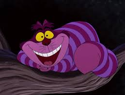

The Cheshire Cat
The Cheshire cat is the guide in the novel, he is demonstrated to guide her but no necessairly in a positive way. It is hinted at that the Cheshire Cat provides help in unlocking her supressed tramatic memories, and overcome her suicidal depression. This cat provides depth and reasoning as to why Alice is the way she is.
